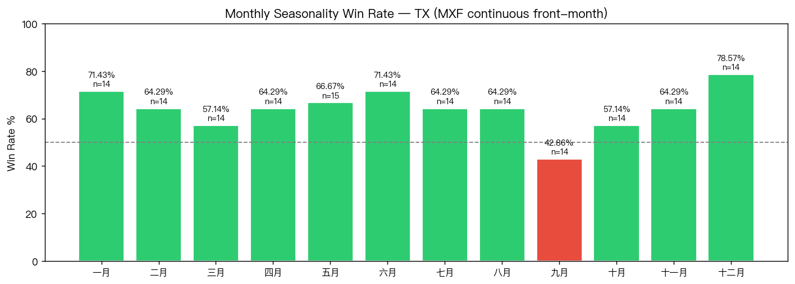
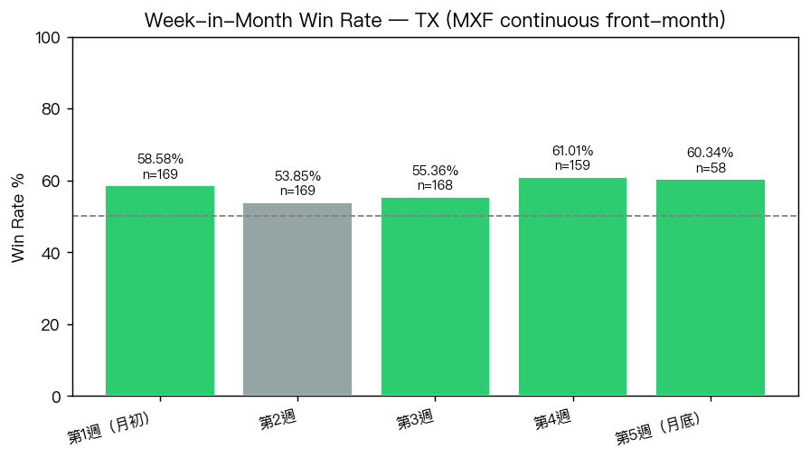

14 years each: January 71.4% win rate (+377 pts avg), February 64.3% (+396 pts avg) — both LONG bias.
Total months
169
2012-05-07 → 2026-05-11
Overall win rate
63.91%
Buy month-open, sell month-close
Avg monthly change
+199 pts
TX (MXF continuous front-month)
TX (MXF continuous front-month) is a rolling front-month continuous contract; roll adjustments near a month boundary can shift month_open/month_close independent of real price movement. Known limitation, not corrected here.
中文摘要
台指期月份季節性：月初開盤買、月底收盤賣。
以下為英文原文。專有名詞見術語表。
Key findings
n = number of years (14 at most). Treat calendar-month bias as descriptive seasonality context, not a standalone trading signal — sample size is inherently small for a once-a-year event.
58.6% across all 169 months, ahead of week 2 (53.9%) — consistent with the report's own headline question (buy month-open).
Impact on 請分析
No active 請分析 policy change. Research/publication only for this study.
Seasonality


Seasonality by Calendar Month
Win rate ≥55% → LONG bias, ≤45% → SHORT, else NEUTRAL. n = years present.
| Month | n | WR | Avg pts | Avg % | Median | Best | Worst | Bias |
|---|---|---|---|---|---|---|---|---|
| 一月 | 14 | 71.43% | +377 pts | +2.01% | +170 | +2752 | -646 | LONG |
| 二月 | 14 | 64.29% | +396 pts | +2.15% | +255 | +3504 | -472 | LONG |
| 三月 | 14 | 57.14% | -257 pts | -0.63% | +132 | +1312 | -3135 | LONG |
| 四月 | 14 | 64.29% | +518 pts | +2.23% | +58 | +6744 | -990 | LONG |
| 五月 | 15 | 66.67% | +286 pts | +1.36% | +239 | +1641 | -639 | LONG |
| 六月 | 14 | 71.43% | +133 pts | +0.73% | +126 | +1687 | -2386 | LONG |
| 七月 | 14 | 64.29% | +36 pts | +0.51% | +116 | +922 | -1454 | LONG |
| 八月 | 14 | 64.29% | +108 pts | +0.33% | +76 | +978 | -654 | LONG |
| 九月 | 14 | 42.86% | +57 pts | +0.46% | -44 | +2486 | -1226 | SHORT |
| 十月 | 14 | 57.14% | +113 pts | +0.07% | +96 | +1653 | -1072 | LONG |
| 十一月 | 14 | 64.29% | +325 pts | +2.84% | +79 | +1837 | -693 | LONG |
| 十二月 | 14 | 78.57% | +285 pts | +1.55% | +200 | +1739 | -744 | LONG |
Week-in-Month Structure
| Week | n | WR | Avg pts | Median |
|---|---|---|---|---|
| 第1週（月初） | 169 | 58.58% | +71 pts | +49 |
| 第2週 | 169 | 53.85% | +50 pts | +23 |
| 第3週 | 168 | 55.36% | +10 pts | +31 |
| 第4週 | 159 | 61.01% | +57 pts | +71 |
| 第5週（月底） | 58 | 60.34% | +55 pts | +66 |
Year × Month Heatmap (points)
| Year | 1 | 2 | 3 | 4 | 5 | 6 | 7 | 8 | 9 | 10 | 11 | 12 |
|---|---|---|---|---|---|---|---|---|---|---|---|---|
| 2012 | — | — | — | — | -330 | +171 | +26 | +117 | +363 | -491 | +399 | +170 |
| 2013 | +111 | +58 | -18 | +207 | +44 | -318 | +243 | -94 | +398 | +31 | +64 | +105 |
| 2014 | -81 | +323 | +300 | +20 | +228 | +341 | -187 | +211 | -375 | -130 | +195 | +231 |
| 2015 | +155 | +261 | -41 | +227 | -195 | -366 | -664 | -654 | +427 | +217 | -140 | -225 |
| 2016 | -42 | +249 | +265 | -277 | +251 | +47 | +255 | -4 | +139 | -137 | +33 | +113 |
| 2017 | +176 | +270 | +53 | +9 | +239 | +118 | +188 | +130 | -261 | +463 | -184 | +23 |
| 2018 | +488 | -426 | +238 | -407 | +406 | -247 | +279 | +48 | -55 | -1072 | -28 | -186 |
| 2019 | +165 | +355 | +212 | +498 | -639 | +133 | -116 | +104 | +304 | +507 | +94 | +620 |
| 2020 | -621 | -182 | -1458 | +1224 | +375 | +922 | +711 | +22 | -134 | -157 | +1735 | +528 |
| 2021 | +429 | +801 | +306 | +792 | -401 | +544 | -478 | +336 | -967 | +484 | +776 | +502 |
| 2022 | -646 | -39 | -44 | -990 | -66 | -2386 | +740 | -336 | -1226 | -391 | +1837 | -744 |
| 2023 | +1461 | -36 | +325 | -278 | +1143 | +66 | +45 | -172 | -268 | +161 | +910 | +443 |
| 2024 | +213 | +881 | +1312 | +96 | +922 | +1687 | -1454 | +830 | -34 | +447 | -449 | +677 |
| 2025 | +717 | -472 | -1909 | -620 | +667 | +1146 | +922 | +978 | +2486 | +1653 | -693 | +1739 |
| 2026 | +2752 | +3504 | -3135 | +6744 | +1641 | — | — | — | — | — | — | — |
Method and evidence boundary
This is a full-coverage seasonality reproduction (ported from the read-only legacy trading/tx/macro_analysis.py, verified numerically identical), not a new hypothesis test; it exists to give the owner a recurring, market-agnostic report shape they can rerun for any instrument.
Raw CSV and private decision conversations remain in trading-private. This public page contains reviewed aggregate results, charts, and the reproducible method only.